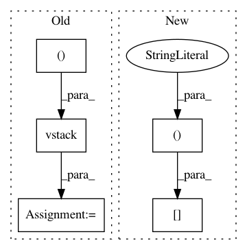

35a74bcac5b18ed8d0b04cda5d57fcde3659b059,pyAudioAnalysis/ShortTermFeatures.py,,chromagram,#,305
Before Change
if count_fr == 1:
chromogram = chroma_feature_matrix.T
else:
chromogram = np.vstack((chromogram, chroma_feature_matrix.T))
freq_axis = chroma_names
time_axis = [(t * step) / sampling_rate
for t in range(chromogram.shape[0])]
After Change
chroma_names, chroma_feature_matrix = chroma_features(X, sampling_rate,
num_fft)
chroma_feature_matrix = chroma_feature_matrix[:, 0]
chromogram[count_fr-1, :] = chroma_feature_matrix.T
freq_axis = chroma_names
time_axis = [(t * step) / sampling_rate
for t in range(chromogram.shape[0])]
In pattern: SUPERPATTERN
Frequency: 3
Non-data size: 5
Instances
Project Name: tyiannak/pyAudioAnalysis
Commit Name: 35a74bcac5b18ed8d0b04cda5d57fcde3659b059
Time: 2020-06-13
Author: tyiannak@gmail.com
File Name: pyAudioAnalysis/ShortTermFeatures.py
Class Name:
Method Name: chromagram
Project Name: bsmurphy/PyKrige
Commit Name: 1983fc216e9453293f768d2f66d57747584b70e3
Time: 2017-03-05
Author: bscott.murphy@gmail.com
File Name: pykrige/core.py
Class Name:
Method Name: initialize_variogram_model
Project Name: tyiannak/pyAudioAnalysis
Commit Name: 35a74bcac5b18ed8d0b04cda5d57fcde3659b059
Time: 2020-06-13
Author: tyiannak@gmail.com
File Name: pyAudioAnalysis/ShortTermFeatures.py
Class Name:
Method Name: spectrogram